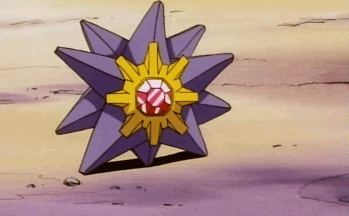
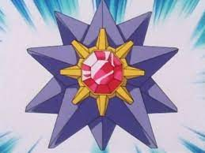

Os braços são desigualmente cobertos com pequenas espinhas de bordas irregulares, que revestem o sulco em
que os pés do tubo se encontram, e se juntam à boca em uma forma semelhante a um ventilador; e elas possuem
ânus. Os indivíduos desta espécie são heterotróficos e se alimentam de moluscos, gastrópodes, caracóis,
caranguejos, crustáceos, vermes, equinodermos, ascídias, ouriços do mar, esguichos do mar e outras estrelas
do mar, incluindo conspecíficos se a fonte de alimento se esgotar.
Como os demais equinodermos, elas possuem sistema hidrovascular, ou seja, possuem em seu interior vasos por
onde ocorre a circulação da água. E como outros invertebrados marinhos, elas podem se manter praticamente
isotônicas em relação ao meio graças à absorção de sais presentes na água do mar.
É um predador generalista, mas ataca principalmente grandes espécies de moluscos bivalves. Ele separa suas
asas com todos os cinco braços e, em seguida, inverte seu estômago na concha. Ele pode cavar mariscos do
fundo do mar de vez em quando. Pode ser seletiva ou oportunista, dependendo da disponibilidade de presas.
Para locomover-se de um lugar para outro, elas usam centenas de patinhas tubulares situadas em sua parte
inferior, as quais parecem pequenas pernas, havendo ventosas em cada ponta.
Como a simetria é pentarradial, os órgãos sensoriais estão distribuídos por todas as laterais do
corpo, fazendo com que o animal receba estímulos de todas as direções do ambiente (adaptação à vida com
pouca mobilidade ou fixa).
Pode regenerar partes danificadas ou braços perdidos e lançar os braços como um meio de defesa.
O sistema vascular de água é um sistema hidráulico composto de uma rede
de canais cheios de fluidos e está preocupada com a locomoção, adesão, manipulação de alimentos e troca de
gases.
O interior de todo o sistema do canal está alinhado com cílios.
O líquido do sistema vascular aquífero consiste em água do mar circundante, à qual o animal acrescenta
componentes específicos, como celomócitos, compostos orgânicos, como proteínas, e uma concentração
relativamente alta de íons potássio. O líquido circula pelo sistema basicamente por ação dos cílios que
revestem os epitélios internos dos canais, alguns dos quais contêm extensões semelhantes a divisórias, que
poderiam ajudar a direcionar o fluxo.
O sistema nervoso dos equinodermos é composto de uma rede de neurônios sem um gânglio
central. Em volta da boca há um anel do qual partem nervos para cada braço. Os equinodermos não possuem
cérebro, porém algumas espécies podem ter alguns gânglios. Como a simetria é pentarradial, os órgãos
sensoriais estão distribuídos por todas as laterais do corpo, fazendo com que o animal receba estímulos de
todas as direções do ambiente (adaptação à vida com pouca mobilidade ou fixa).
Por fim, as estrelas-do-mar são em sua maioria dióicas, sendo os indivíduos adultos macho ou fêmea. Quando
se reproduzem, os adultos liberam gametas de suas gônadas diretamente no ambiente. A fertilização é externa
na maior parte das espécies de estrelas-do-mar, com algumas exceções. Os ovos fecundados podem se aderir a
rochas ou serem carregados pelas fêmeas, formando embriões que em sua maioria passam por uma fase de vida
larval (desenvolvimento indireto). As estrelas-do-mar também são conhecidas por serem capazes de realizar
reprodução assexuada através da fissão de seus corpos. Cada porção após o corte, se viáveis, são capazes de
se regenerar produzindo assim clones do indivíduo original. Este mesmo processo também serve para reparos
corporais, como a regeneração de braços perdidos.
Na inspiração em desenhos animados, citamos o Pokémon Starmie:

